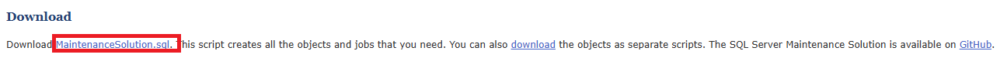

皆さんこんにちは、System Center サポートチームの 保科と申します。
今回は、System Center Operations Manager (SCOM) のベース内で増加した unused 領域を開放する手順をご紹介します。
SCOM 2016
SCOM 2019
SCOM 2022
概要
SCOM を最小限の構成でインストールすると、以下 2 種類のデータベースが作成されます。
- OperationsManager:
SCOM の監視構成やインポートされた管理パック、監視対象の情報、監視データやアラート情報等 SCOM に関するあらゆる情報が保存されるデータベースです。
このデータベースが動作不備になったり、容量がいっぱいになると、SCOM 自体を使用することが出来なくなります。 - OperationsManagerDW
SCOM のレポート機能で使用するための監視データや監視対象の情報等が保存されるデータベースです。
保存されるデータは、SCOM の監視動作に準ずるものとなります。
例えば、パフォーマンスカウンターの収集を実施されている場合、まずは “OperationsManager” データベースにその監視内容が保存されます。
その後、その監視内容が “OperationsManagerDW” 側でも保存され、更にレポート用のデータとしてその保存されたデータが加工されます。
“OperationsManager” データベースと異なり、本データベースが極端の場合存在しない場合でも、SCOM の機能を使用することが出来ます。
(データベースの削除自体を推奨しているものではございません。)
一方で、本データベースに不備が発生すると、レポートに関するデータが取得できない、つまりレポートを閲覧することが出来なくなります。
今回ご紹介とするのは、”OperationsManager” のデータベースに関してです。
こちらのデータベースが長期的に運用されることで、”unused” 領域が増加する事象が確認されます。
データベースの空き容量は “unallocated” 領域に該当し、”unused” 領域は未使用領域ではあるものの、厳密には空き容量として計上されません。
そのため、空き容量に該当しない未使用領域が長期運用に伴い増加することで、データベースの空き容量を圧迫する要因となります。
今回は、この “unused” 領域を解放する手順と、その操作を定期的に実行するための設定手順をご紹介いたします。
参考情報
本格的なご説明の前に、今回の記事の大元となる弊社エンジニアのブログをご紹介いたします。
What SQL maintenance should I perform on my SCOM databases?
今回ご紹介とします操作に加え、SCOM 関連データベースおよび SQL Server で必要なメンテナンスや設計思想が数多く掲載された、有用なブログ記事です。
事象発生要因
結論を先に述べると、”unused” 領域の拡大は、インデックス最適化が行われていない場合に発生する可能性がございます。
SCOM データベースである “OperationsManager” データベースの設計と SQL Server 2016 以降の仕様によって、一部テーブルに対してインデックス最適化処理が行われない可能性がございます。
比較的多い事例として、”dbo.PerformanceData_xx” テーブルが “unused” の領域の大半を消費することがございます。
(“xx” にはテーブル番号を示す数値が入力されます。)
“dbo.PerformanceData_xx” は SCOM の処理上、現在のテーブル内データに応じてインデックスを最適化する処理が行われません。
これによって、下記の影響が発生する場合がございます。
- 実データ総数に対して、テーブルが実際に使用する容量が必要以上に消費される。
- データベース自体のパフォーマンスへの影響。
- テーブル内の未使用領域 (= “unused” 領域) の未開放
こちらの事象対処のため、後述の手順で対象テーブルのインデックス最適化を行います。
下記にご紹介します手順を弊社検証環境でも実施しました結果、テーブル内のレコード数が減ることなく “OperationsManager” データベースの “unused” 領域の割合が下記の遷移となりましたことを確認しております。
- 手順実施前: 10.95%
- 手順実施後: 3.76%
上記で減少した “unused” 領域の割合だけ、”unallocated” 領域の割合も増加します。
また、手順実施後も SCOM 上でのデータ欠損等は見られず、動作も正常に行われ続けることも確認しております。
そのため、事象対処にあたっては、下記にご案内します手順の実施は有用と判断しております。
“unused” 領域占有状況の確認方法
“unused” 領域はユーザーでも簡単に確認いただけます。
確認点としてはデータべーズ全体の “unused” 領域の割合を確認する方法と、テーブル毎に “unused” 領域の総容量を確認する方法がございます。
以下確認では SQL Server データベースのレポートを表示します。
各レポート表示後、レポートの画面上で右クリックし、[エクスポート] から以下形式でレポートをエクスポートいただけます。
- Excel
- Word
状況に応じてレポートをエクスポートいただき、データ分析のお役に立ててください。
データべーズ全体の “unused” 領域割合の確認方法
- “OperationsManager” データベースが存在するサーバーに管理者権限でログインします。
- SQL Server Management Studio (SSMS) を開きます。
- 目的のデータべースが存在するサーバーに、管理者権限でログインします。
- 左ペインより “OperationsManager” を右クリックし、[レポート] -> [標準レポート] -> [ディスク使用量] をクリックします。
- ディスク使用量のレポートが表示されますので、表示された左側の円グラフの “unused” 領域の割合を確認します。
この割合が、現在 “OperationsManager” データベースで占有されている “unused” 領域の割合となります。
テーブル毎の “unused” 領域使用量の確認方法
- “OperationsManager” データベースが存在するサーバーに管理者権限でログインします。
- SQL Server Management Studio (SSMS) を開きます。
- 目的のデータべースが存在するサーバーに、管理者権限でログインします。
- 左ペインより “OperationsManager” を右クリックし、[レポート] -> [標準レポート] -> [テーブルごとのディスク使用量] をクリックします。
- 表示されたレポートの [未使用 (KB)] 列の値を確認します。
こちらの値が、各テーブルで “unused” 領域に該当する使用容量を表示します。
“unused” 領域の開放
それでは本題の、”OperationsManager” データベースより “unused” 領域を解放する手順をご紹介します。
事前準備
本手順は “OperationsManager” データベースに対してインデックス最適化を行う処理を実施いただきます。
念のため、手順を実施いただく前に、”OperationsManager” データベースのバックアップを取得いただくことを推奨致します。
バックアップ方法は、下記の弊社サイトをご確認ください。
データベースの完全バックアップの作成
万が一インデックス最適化後に SCOM 動作が不安定になったり、機能不全に陥った場合、データベースの復元を行います。
復元をいただく場合、ご利用の SCOM サーバー全台で、本ブログ別記事の [② SCOM 管理サーバーのキャッシュクリア手順] 項の手順を実施いただきます。
SCOM の各種キャッシュクリアの手順 - ② SCOM 管理サーバーのキャッシュクリア手順
その際、2. の手順実施後から 5. の手順実施前の任意の間で、データベースを復元いただきます。
なお、復元の際は、必ずすべての SCOM サーバーで 2. の手順が実施された状態としていただきます。
復元手順は下記の弊社サイトに沿って行います。
データベースの完全バックアップの作成
復元後、停止された SCOM サービス一式を起動します。
手順で使用するクエリの入手
今回ご紹介としますインデックス最適化は、別途環境内に作成いただくストアド プロシージャを実行することで行われます。
こちらのストアド プロシージャを作成するクエリを提供しておりますサイトをご紹介します。
SQL Server Maintenance Solution - SQL Server Index and Statistics Maintenance
以下図の箇所を参考とし、手順内で使用するクエリをダウンロードします。

本手順
- “OperationsManager” データベースを運用する SQL Server が動作するサーバーに管理者権限でログインします。
- ダウンロードされた “MaintenanceSolution.sql” を、1. でログインされたサーバーにコピーします。
- 1. でログインされたサーバー上で SQL Server Management Studio (SSMS) を開きます。
- “OperationsManager” データベースが存在するサーバーに、管理者権限でログインします。
- 画面左ペインより、ログインされたサーバー名を右クリックし、[新しいクエリ] をクリックします。
- クエリ入力欄に、2. でコピーされた “MaintenanceSolution.sql” ファイルをドラッグ & ドロップします。
- クエリ入力欄にクエリが表示されましたら、F5 キーを押下してクエリを実行します。
対象サーバーのシステムデータベースである “master” データベースに、”dbo.IndexOptimize” ストアドプロシージャが新規に作成されます。 - 続けて、画面左ペインより、ログインされたサーバー名を右クリックし、[新しいクエリ] をクリックします。
- 下記のクエリをクエリ入力欄に貼り付け、F5 キーを押下してクエリを実行します。
1
2
3
4
5
6
7
8use [master]
EXECUTE dbo.IndexOptimize
@Databases = 'OperationsManager',
@FragmentationLow = NULL,
@FragmentationMedium = 'INDEX_REORGANIZE,INDEX_REBUILD_ONLINE,INDEX_REBUILD_OFFLINE',
@FragmentationHigh = 'INDEX_REBUILD_ONLINE,INDEX_REBUILD_OFFLINE',
@FragmentationLevel1 = 5,
@FragmentationLevel2 = 30
手順は以上となります。
こちらのクエリによって、インデックス最適化が必要なテーブルのみに対してインデックス最適化を行う “dbo.IndexOptimize” ストアドプロシージャを実行します。
弊社検証環境では、”dbo.PerformanceData_xx”、”dbo.Event_xx”、”dbo.StateChangeEvent” テーブルに対してのみインデックス最適化が行われたことを確認しております。
なお、テーブルのインデックス最適化という処理の関係上、サーバーの性能や最適化対象となるテーブル数やその大小によってクエリ実行時間が大きく変動いたします。
クエリを実行いただく際は、可能であれば業務影響の小さい時間帯に実施いただくことを推奨いたします。
クエリ実行後、”OperationsManager” データベースに占める “unused” 領域が縮小し “unallocated” 領域が拡大したことを確認します。
仕様上、すべての “unused” 領域が “unallocated” 領域になることはありません。
事象再発抑止のための定期的なクエリ実行スケジュールの設定
[対処手順] 項で記載しました手順を実施いただくことで、テーブルのインデックス最適化が実施されます。
これにより、”OperationsManager” データベース内の “unused” 領域を開放いただけます。
一方で、時間経過によってインデックス情報が陳腐化され、再度 “unused” 領域が拡大する場合がございます。
そのため、本日ご案内しましたクエリについては、1 日に一度実行いただくことを推奨いたします。
SQL Server には特定のクエリをスケジュールする機能がございますので、そちらで設定いただいてクエリを自動化いただくのが有用と判断しております。
下記にスケジュール設定手順をご案内いたします。
- [対処手順] でクエリを実行されたサーバーに管理者権限でログインします。
- SQL Server Management Studio (SSMS) を開き、サーバーに管理者権限でログインします。
- 画面左ペインの [<サーバー名>] -> [SQL Server エージェント] -> [ジョブ] を右クリックし、[新しいジョブ] をクリックします。
- 新しいウィンドウが表示されますので、まず [全般] 項にてジョブの任意の名称を [名前] 入力欄に入力します。
- [ステップ] 項をクリックし、ウィンドウ下部の [新規作成] をクリックします。
- 以下の設定を行います。
特に明記していない項については、既定値の状態で設定いただくものとします。
設定完了後、[OK] をクリックしてステップを保存します。① [全般] 項の設定:
・ステップ名:
作成するステップの任意の名称を指定します。・種類:
“Transact-SQL スクリプト (T-SQL)” を選択します。・データベース:
“master” を選択します。・コマンド:
[対処手順] の 9. の手順でご案内しましたクエリを貼り付けます。② [詳細設定] 項の設定:
・実行時のユーザー:
SQL Server に管理者権限を持つアカウントを指定します。 - [スケジュール] 項をクリックし、ウィンドウ下部の [新規作成] をクリックします。
- 以下の設定を行います。
特に明記していない項については、既定値の状態で設定いただくものとします。
設定完了後、[OK] をクリックしてスケジュールを保存します。・名前:
作成するスケジュールの任意の名称を指定します。・スケジュールの種類:
“定期的” を指定します。・実行:
“毎日” を指定します。・間隔:
既定状態の “1” となることを確認します。・一日のうちの頻度:
“1 回” を指定します。
その後、指定する時間については 3:00 から4:00 の間で指定いただくことを推奨いたします。
これは、その付近で実行される SCOM データベースのメンテナンス時間との重複を避け、かつ業務時間への影響が小さい時間にクエリを実行することを目的としております。
SCOM データベースで実行されるメンテナンスおよびその実行時間は、下記の弊社サイトに纏めて掲載されております。
Operations Manager のスケジュールされたメンテナンス - [OK] をクリックし、設定された内容でジョブを保存します。
おわりに
今回は、SCOM データベースの未使用領域を解放する手順をご紹介としました。
SCOM データベースの容量は SCOM 自体でも監視されており、空き容量が少なくなるとアラートが発生します。
このアラートが発生した場合、まずは未使用領域が増加していないかご確認の上、増加が認められた場合は上記手順に沿って領域開放を行います。
お客様の SCOM データベース運用が、本記事でより円滑なものとなれば幸いでした。
※本情報の内容（添付文書、リンク先などを含む）は、作成日時点でのものであり、予告なく変更される場合があります。